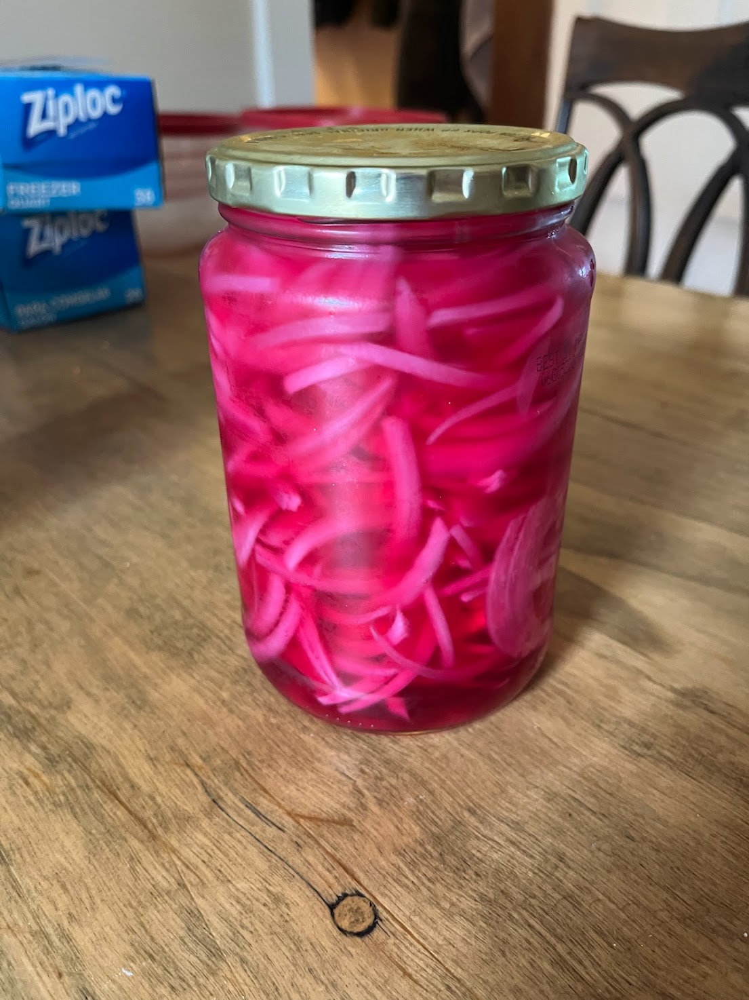

Pickled Red Onion
Home

Description
This is one of the most useful pickled condiments. I like to eat with Mexican food, but it fits well in many culinary applications.
Ingredients
- 1 red onion
- 1 1/4 cups distilled white vinegar
- 1 1/4 cups water
- 2 1/2 tsp salt
- 1 tsp black mustard seeds
- 1 tsp black peppercorns
- 2 cloves garlic
- 2 birds eye chilis
- 2 bay leaves
Steps
- Thinly slice onion from root to stem
- Bring water, vinegar and salt to boil
- Pour over onion and aromatics into glass jar
- Close jar and refrigerate once it cools sufficiently
Notes
- Ideally, boil the jar for 10 minutes in advance to sterilize it. This will lengthen the pickles' lifespan in your fridge. The lid can just be washed with warm soapy water.